Strona główna (pierwszy ekran 1440 jasny i 390 ciemny), moment firmowy w trzech klatkach, ikona w 180/64/32 px (jasna i ciemna), podstrona polityki prywatności 390. Treść z inwentarza strony; kroje treści z plików (OFL), więc zrzut z Linuksa jest miarodajny. Pełne strony: docs/design/kierunki/*-glowna.html i *-polityka.html.
Który kierunek robi „wow”?
Każda aplikacja przechodzi drogę kawy od zbioru do podania; pasek pokazuje, gdzie jest dziś.
Najmocniejszy argument: jedyny kierunek, który w jednym elemencie pokazuje metodę studia i prawdziwy etap każdej aplikacji. Klient albo inwestor (cel nr 1, D-001) w kilka sekund widzi, że studio wydaje i jak pracuje.
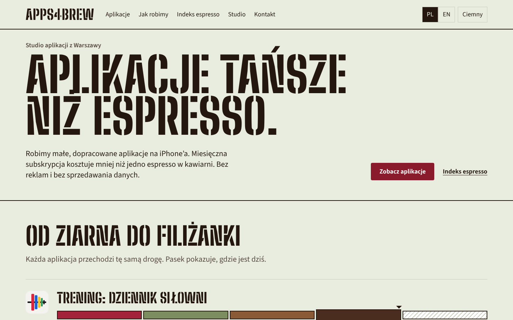
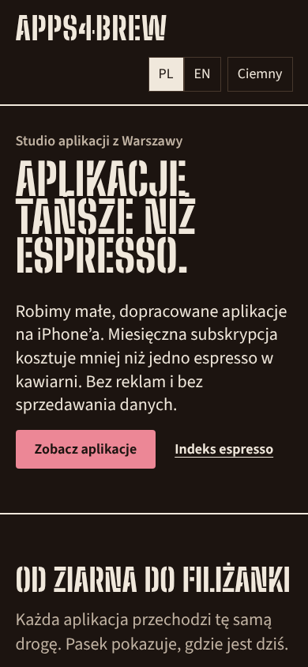
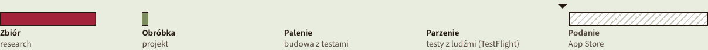
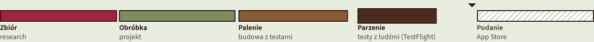
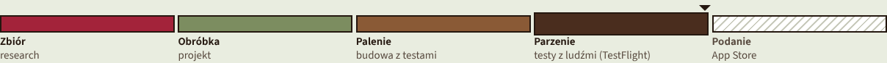
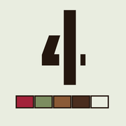
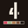
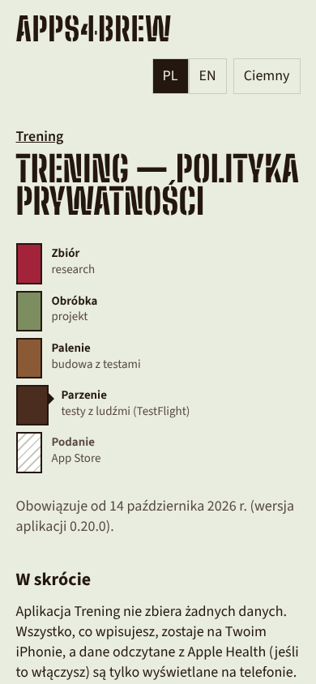
Strona to tablica menu kawiarni studia: hasło i cennik espresso są złożone z wsuwanych liter.
Najmocniejszy argument: moment firmowy wynika z prawdziwej akcji (PL/EN przestawia litery), a dwie rzeczy z listy „zachować” (indeks espresso, PL/EN) stają się jednym przedmiotem z kawiarni. Najsilniejszy pojedynczy punkt skupienia (test mrużenia).
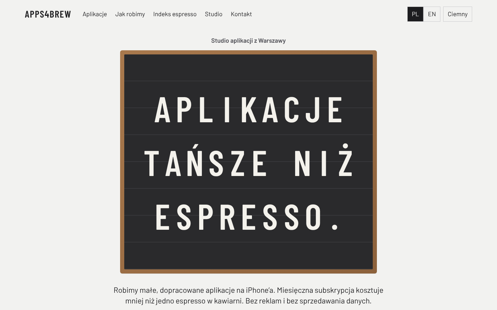
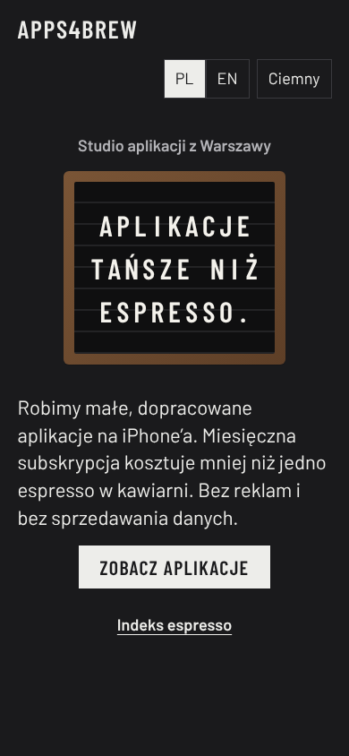
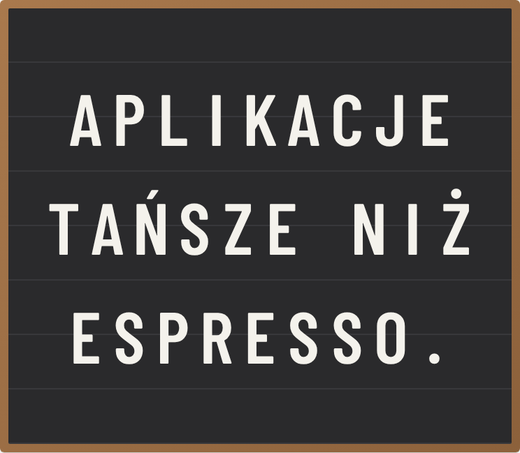
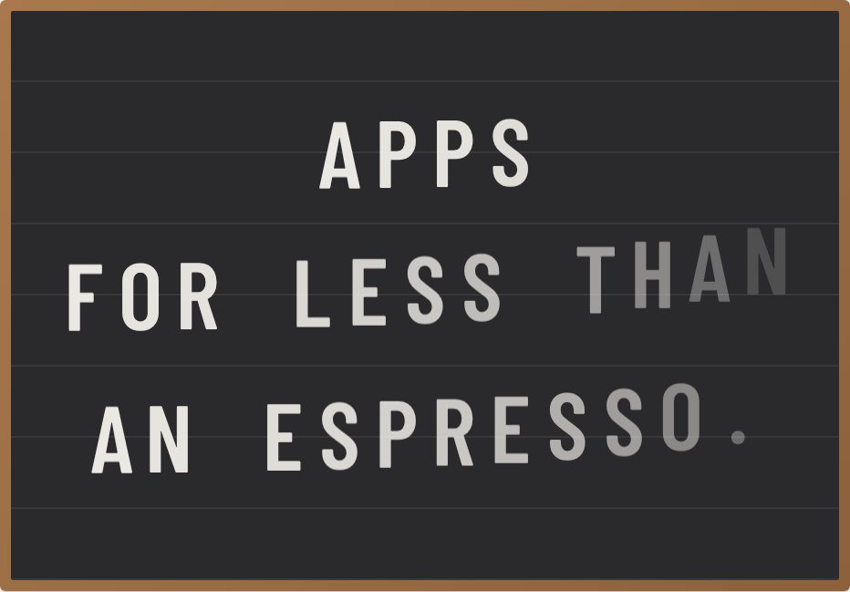
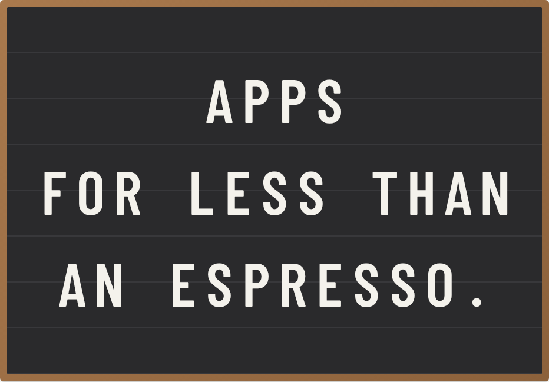
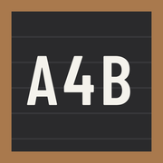
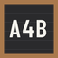
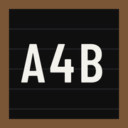
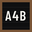
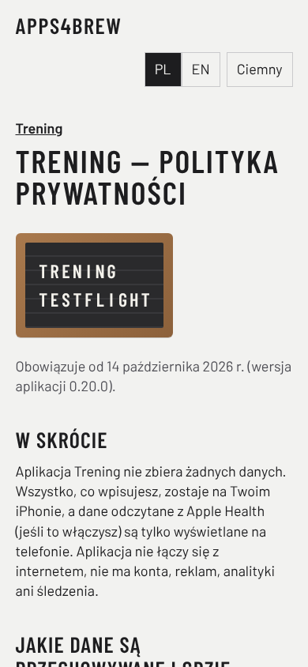
Szyld studia na warszawskiej fasadzie: za dnia rurki zgaszone, nocą świecą; świecą nazwy aplikacji, które są w testach.
Najmocniejszy argument: jedyny kierunek z miejscem (studio z Warszawy, nie z kreatora stron) i jedyny, w którym motyw jasny/ciemny coś znaczy (dzień i noc). Po zakryciu nazwy najłatwiej rozpoznawalny.
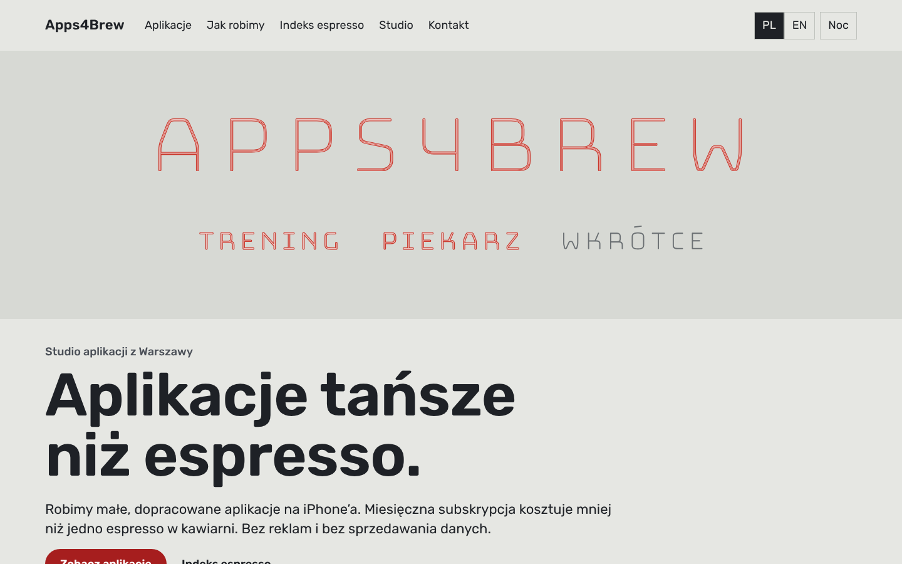
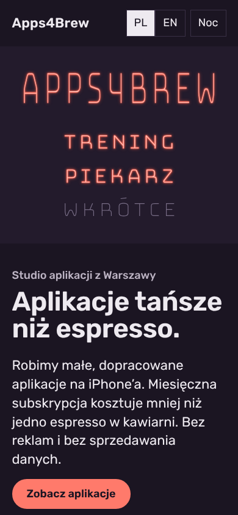
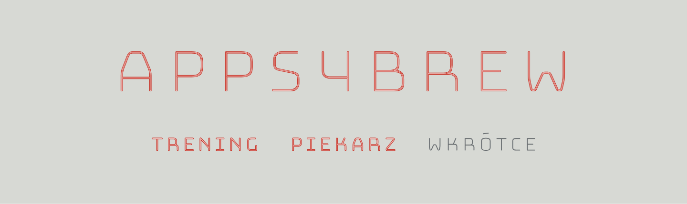
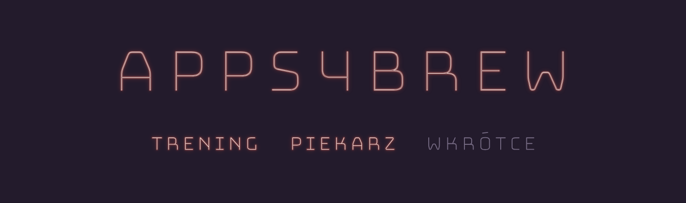
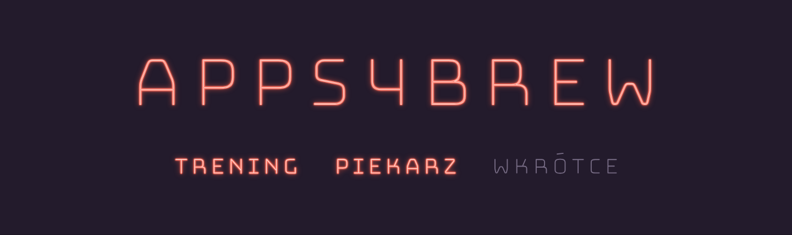
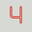
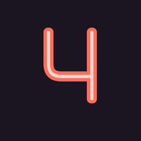
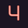
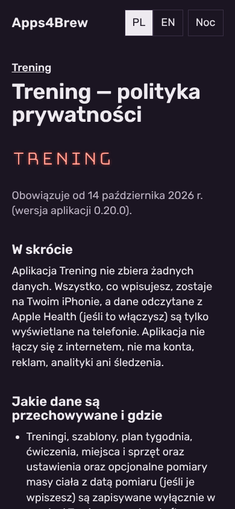
Rekomenduję A2 „Od ziarna do filiżanki”, z powodu funkcji, nie gustu: cel nr 1 strony to wiarygodność studia dla klientów i inwestorów (D-001), a A2 jako jedyny pokazuje w jednym elemencie metodę pracy i prawdziwy etap każdej aplikacji; ten sam element działa na podstronach (dokument wie, której aplikacji dotyczy) i rośnie z portfolio (kolejna aplikacja = kolejny pasek). B jest najmocniejszy wizualnie i najlepiej niesie indeks espresso i PL/EN, ale jego dane to cena i język, a nie to, czy studio dowozi. C daje miejsce i najbardziej rozpoznawalny szyld, ale za dnia element firmowy słabnie (test mrużenia), a para „ciemne tło + czerwony akcent” stoi blisko wyboru domyślnego (uzasadniona barwą neonu, ale to wciąż ryzyko szablonu). Łączenie (np. A2 z tablicą B w sekcji indeksu) jest możliwe, ale osłabia zasadę jednego mocnego miejsca.
| Pole | A2 Ziarno | B Tablica | C Neon |
|---|---|---|---|
| Paleta | tło przesunięte z „kremowego” w zieleń ziarna; bordo owocu rzadkie u konkurencji | złoty akcent = karta kontrolna (b) → usunięty; tablica jednobarwna | granatowa noc = karta (b) → noc śliwkowa; „ciemne tło + cynober” z Kalibracji uzasadnione barwą gazu neonowego (Britannica, NIST; wyjątek D-010) |
| Krój tytułów | szablon (stencil), brak w kartach i u konkurencji | wąskie wersaliki, blisko jednej strony z poprzeczki; różnica: litery tablicy, nie plakat | Rubik + rurka Bungee Hairline, brak w kartach |
| Element firmowy | pasek etapów z danymi (karta (a): mockup iPhone’a) | tablica menu | szyld neonowy |
| Układ | wielki tytuł + pasek pod aplikacją | wyśrodkowana tablica (klisza 5/13 u konkurencji; uzasadniona przedmiotem) | pas fasady + standardowa reszta |
| Ruch | po jednym momencie na stronę, wyłączany przy „Ogranicz ruch”; żadnego „fade + slide up” sekcji | ||
Kontrast 29/29 par (oba motywy) · warsztat.mjs: 0 błędów (6 stron × 390/1024) · 320/390/1440 bez przewijania w poziomie · test mrużenia: B jeden punkt skupienia; A2 tytuł + paski; C za dnia szyld ginie (znalezisko).